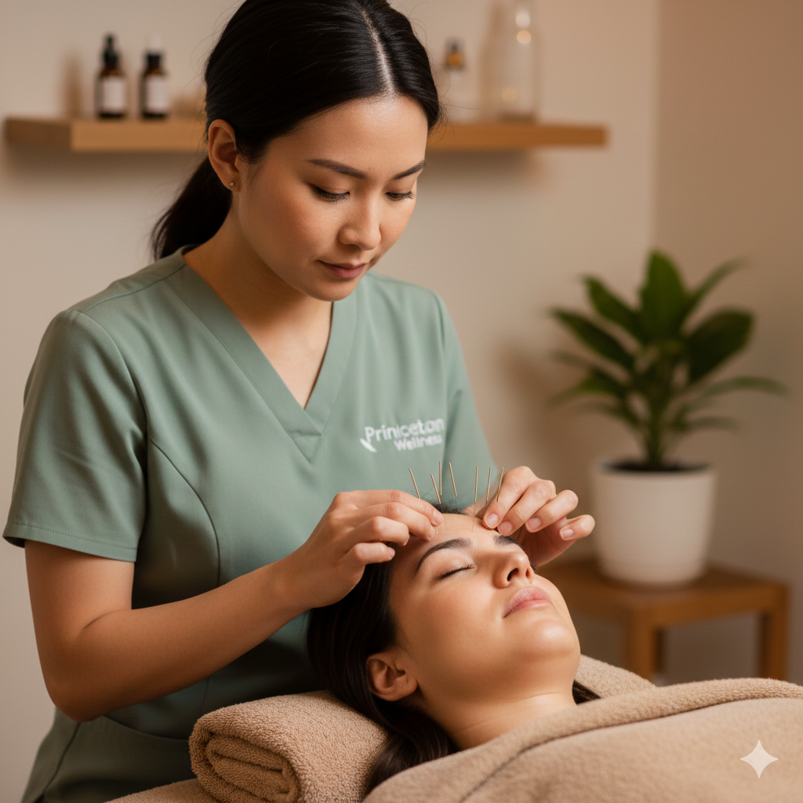

Richmond Hill Acupuncture & Supportive Recovery Care
Princeton Wellness Centre offers supportive Bell's Palsy care through acupuncture, Tuina, and gentle facial therapy for clients in Richmond Hill, Markham, Vaughan, Thornhill, Aurora, and surrounding York Region communities.
Bell's Palsy is typically diagnosed by a medical doctor, who may rule out other conditions and suggest medications such as corticosteroids, eye protection strategies, or referral to physiotherapy.
From a Traditional Chinese Medicine (TCM) perspective, Bell's Palsy is often related to:
Our treatments aim to move qi and blood along the affected channels, warm and nourish the face, and support the body's ability to heal.

Acupuncture points are selected on the face and body to:
Needles used on the face are very fine, and we adjust technique based on how recent or chronic your symptoms are.
In addition to acupuncture, we may incorporate:
The touch is always gentle and adapted to your comfort level.
In some cases, your practitioner may recommend moxibustion (moxa) to:
Heat is used carefully and is always checked with you to keep it comfortable and safe.
Many people start complementary care:
Your practitioner will adjust the intensity and focus based on how long you have had symptoms.
Our Bell's Palsy program is designed to sit alongside your conventional care. We always recommend that you:
We can coordinate with your healthcare providers when appropriate.
With a series of treatments, many clients notice:
Results and timelines vary from person to person; we always discuss realistic expectations.
At our Princeton Avenue clinic in Richmond Hill, we provide one-on-one sessions tailored to your facial pattern, comfort level, and stage of recovery.
We review your medical diagnosis, when symptoms started, current medications, and main challenges (eye closure, mouth movement, pain, etc.).
Your practitioner explains which acupuncture points, facial areas, and additional therapies (such as moxibustion or Tuina) will be used, and how often sessions are recommended.
Each session may include body and facial acupuncture, gentle manual techniques, and targeted work on the affected side, with constant communication about comfort.
We provide simple facial exercises or self-massage techniques to practice at home and adjust your treatment plan based on your progress over time.
Bell's Palsy sessions are typically billed as acupuncture or massage therapy, depending on which type of practitioner provides your treatment.
We issue official receipts that you can submit to your extended health insurance if your plan covers these services. Coverage varies by provider; please check your individual policy.
Bell's Palsy is a condition that may cause sudden weakness or paralysis on one side of the face. Many people notice facial drooping, difficulty closing one eye, changes in smiling, and tightness or discomfort around the jaw and cheek. While some cases improve with time, early medical evaluation is important.
At Princeton Wellness Centre, we provide supportive Bell's Palsy care in Richmond Hill for people who want to explore acupuncture and related therapies as part of their broader recovery plan. Our approach may include acupuncture, Tuina, gentle facial therapy, and wellness guidance based on your presentation and comfort level.
Sudden facial weakness should be assessed by a licensed medical doctor as soon as possible, ideally within the first 72 hours. Bell's Palsy can sometimes resemble other urgent conditions. Our care is supportive and does not replace emergency, neurological, or physician-led treatment.
To learn more, read our blog: Bell’s Palsy: Why Early Medical Attention Matters and How Supportive Acupuncture Care May Help.
Once you have received medical assessment, supportive care may help address tension, discomfort, and muscle coordination during recovery. Depending on your condition, treatment may focus on promoting circulation, easing muscle guarding, and supporting overall facial relaxation.
Gentle, individualized acupuncture may be used to support comfort, circulation, and facial muscle recovery. Treatment is adjusted based on symptom stage and tolerance.
Manual therapy may help reduce tightness in the face, jaw, neck, and shoulders while encouraging a more balanced recovery pattern.
Some clients visit shortly after diagnosis, while others come later because they still notice tightness, asymmetry, or incomplete facial control. We may also support clients who are looking for a gentle complementary approach alongside physician recommendations, home care, and rehab exercises.
There is no single schedule that fits everyone. Some people begin with one or two sessions per week early on, while others may benefit from a slower pace depending on how long symptoms have been present. Your treatment plan can be adjusted over time based on progress, comfort, and overall recovery goals.
Our clinic is located at 11 Princeton Ave, Richmond Hill, ON. We regularly welcome clients from Richmond Hill, Markham, Vaughan, Thornhill, Aurora, Newmarket, Scarborough, and nearby areas who are looking for acupuncture and wellness support in a calm, professional setting.
You can also explore our broader wellness services, including moxibustion, massage therapy, and osteopathy, depending on your recovery needs.
Acupuncture may help support some Bell's Palsy patients during recovery by addressing comfort, circulation, muscle tension, and facial movement. It should be viewed as supportive care and should not replace medical assessment or physician-guided treatment.
New facial weakness should be medically assessed as soon as possible, ideally within 72 hours. Early evaluation helps rule out other serious conditions and may affect treatment decisions.
Treatment frequency depends on how recent the symptoms are, how much facial weakness is present, and whether there is residual tightness or asymmetry. Some patients begin with one or two sessions per week, and the plan is adjusted as recovery progresses.
Yes. We provide official receipts for eligible acupuncture or massage therapy services, depending on the practitioner and treatment provided. Coverage varies by insurance plan.
We cover that in our educational blog post, Bell’s Palsy: Why Early Medical Attention Matters and How Supportive Acupuncture Care May Help. It explains warning signs, the first 72 hours, and how supportive care may fit into recovery after diagnosis.
Book a consultation at Princeton Wellness Centre on Princeton Avenue in Richmond Hill to discuss how acupuncture and facial therapy may support your Bell's Palsy recovery alongside medical care.